直近1週間の人気フィード
はてなブックマーク数を元に新着優先で並べ替え

経営「AIでラクして早く帰って」→社員「帰らない」 工数最大9割減のDeNAも悩むAI効率化の壁 | ITmedia AI＋ 最新記事一覧 438AI情報RSS
438AI情報RSS
働く側は仕事が増えたと訴え、経営側は人が浮いてこないと嘆く。AIは確かに時間を生んでいる。しかし、その時間はどこへ消えているのか。
2日前
経営「AIでラクして早く帰って」→社員「帰らない」 工数最大9割減のDeNAも悩むAI効率化の壁 438ITmedia AI＋ 最新記事一覧
働く側は仕事が増えたと訴え、経営側は人が浮いてこないと嘆く。AIは確かに時間を生んでいる。しかし、その時間はどこへ消えているのか。
2日前
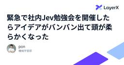
緊急で社内Jev勉強会を開催したらアイデアがバンバン出て頭が柔らかくなった | LayerX エンジニアブログ 320 企業テックブログRSS
企業テックブログRSS
こんにちは。バクラク事業部でエンジニアをしているpon)です。 社内で TypeSafe AI の Jev を題材にした勉強会を開催し、社内のエンジニアが50人以上参加してくれました！ 30分の短い会でしたが、終わってみるとサービスにJevを組みこむアイデアが50件を超えました。この記事では、なぜわざわざ勉強会という形にしたのかと、そこで何が出てきたのかを紹介します！ なぜ勉強会にしたのか 私が、
1日前

既存の LLM が CPU なら、 Jev はその GPU 版みたいなやつ 319 Zennのトレンド
Zennのトレンド
Jev を一晩叩いたので、その感想を書きます。タイトルは超大雑把な要約です。 実験結果まず実験ログを置いておきます。https://github.com/mizchi/jev-playground公式のクックブックの条件を変えた追試https://docs.typesafe.ai/cookbooks/skill_suggestionチェス対戦5戦やって、Claude 5 Sonnet には全勝LoL をミニマルにしたような MOBA ゲームをリアルタイム操作スプリットプッシュのマクロ戦術やタワーダイブのようなミクロ戦術が観察されました集団戦で、誰がタ...
1日前
Androidでおサイフケータイを使いたくない理由 初期化で消えないデータと売却時の落とし穴 179Menthas #all
Androidのおサイフケータイは本体の初期化を行ってもICカード領域に利用履歴や会員情報などのデータが残り続ける。端末の売却時や下取り時には未利用状態でなければ買取拒否や減額対象となりユーザーに大きな負担を強いる。一方でiPhone AirのApple Payは本体設定の初期化だけで決済情報を含めて安全にリセットできる。
9時間前
Androidでおサイフケータイを使いたくない理由 初期化で消えないデータと売却時の落とし穴 179はてなブックマーク - 人気エントリー - テクノロジー
皆さん、突然だが、Androidスマートフォンで「おサイフケータイ」を使っているだろうか？ 私は今後も使いたくない。 最も大きな理由はこれだ。一部の機種において本体をリセットしてもおサイフケータイのデータは残るという、その不便極まりない仕様があるためだ。 通常の初期化では消えないデータと売却時の不利益 お...
14時間前
[ITmedia Mobile] Androidでおサイフケータイを使いたくない理由 初期化で消えないデータと売却時の落とし穴 179ITmedia 総合記事一覧
Androidのおサイフケータイは本体の初期化を行ってもICカード領域に利用履歴や会員情報などのデータが残り続ける。端末の売却時や下取り時には未利用状態でなければ買取拒否や減額対象となりユーザーに大きな負担を強いる。一方でiPhone AirのApple Payは本体設定の初期化だけで決済情報を含めて安全にリセットできる。
14時間前
米軍、AI誤報で作戦計画 中国船に「核部品」、直前中止 | NEWSjp 145 はてなブックマーク - 人気エントリー - テクノロジー
【ワシントン共同】米CNNテレビは18日、米軍がイランと交戦中だった今年春、人工知能（AI）を利用して作成された誤った情報を基に、中東海域で中国船に対する軍事作戦を計画していたと報じた。「核兵器開発計画の部品を運搬している」との内容で、直前に誤報だと判明し、中止したという。関係者の話としている。 中国船...
16時間前

Codexを使うなら、config.tomlとAGENTS.mdを押さえておきたい - じゃあ、おうちで学べる 128 はてなブックマーク - 人気エントリー - テクノロジー
はてなブックマーク - 人気エントリー - テクノロジー
はじめに Codexで設定を残す場所は、主に2つあります。config.tomlは実行環境を、AGENTS.mdは仕事の進め方を決めます。 learn.chatgpt.com config.tomlにはモデルや推論の強さなど、実行時の条件を書きます。AGENTS.mdには検証方法や作業上の制約を書きます。役割は分かれていますが、ファイルを置いただけで意図どおり...
12時間前
Codexを使うなら、config.tomlとAGENTS.mdを押さえておきたい 128 じゃあ、おうちで学べる
はじめに Codexで設定を残す場所は、主に2つあります。config.tomlは実行環境を、AGENTS.mdは仕事の進め方を決めます。 learn.chatgpt.com config.tomlにはモデルや推論の強さなど、実行時の条件を書きます。AGENTS.mdには検証方法や作業上の制約を書きます。役割は分かれていますが、ファイルを置いただけで意図どおりに効くわけではありません。 設定の優先順位、起動場所、読み込まれる指示を確認して初めて、同じ条件でCodexを使えます。この記事では、まず2つの役割を分け、次に設定の読み込み順とAGENTS.mdの探索範囲を確認します。 このシリーズでは…
13時間前

AIに任せた品質は、誰が見立てるのか - AI時代のテストマネジメント 77 はてなブックマーク - 人気エントリー - テクノロジー
はてなブックマーク - 人気エントリー - テクノロジー
JaSST'26 Niigata の講演資料です。AIにテストを任せるとき、テスト計画・分析設計・実行・レポーティング・成果物レビュー・精度改善の6つの工程で、人が何を決め、何を渡し、何を確かめるかを整理しました。
8時間前
AIに任せた品質は、誰が見立てるのか - AI時代のテストマネジメント 77 Technology - Speaker Deck
JaSST'26 Niigata の講演資料です。AIにテストを任せるとき、テスト計画・分析設計・実行・レポーティング・成果物レビュー・精度改善の6つの工程で、人が何を決め、何を渡し、何を確かめるかを整理しました。
11時間前
グーグルの生成AI サイバー能力試験中に他社のシステムに侵入 | NHKニュース 68 はてなブックマーク - 人気エントリー - テクノロジー
はてなブックマーク - 人気エントリー - テクノロジー
アメリカのIT大手「グーグル」が開発した生成AIが、ことし5月におこなわれたサイバー能力の試験中に、実在する企業3社のシステムに侵入していたことがわかりました。 アメリカの有力紙、ウォール・ストリ…
10時間前

Claude Codeの Agent Skills は、ときどき見直したほうがいい 151 じゃあ、おうちで学べる
はじめに 2025年12月に「Claude Codeの Agent Skills は設定したほうがいい」という記事を書きました。必要な手順を必要なときに読み込ませる仕組みとして、Skillsを紹介した記事です。ただ、後半では設定が増えるほど管理が難しくなる話もしました。どれが使われているのか。似た説明のSkillが、互いの出番を奪っていないか。 syu-m-5151.hatenablog.com 今回は、その続きです。Skillsをいくつも設定した人には、まず /skill-doctor を紹介したいです。設定を増やす前に、今ある設定の使われ方を見られます。 /skill-doctor はv2…
2日前
学位なしで年収1500万円超を狙える「無料のAI認定資格」3選 | Forbes JAPAN 公式サイト（フォーブス ジャパン） 85 はてなブックマーク - 人気エントリー - テクノロジー
Indeedによれば、2025年12月に全求人のうちAIに言及したものは4.2％に達し、同プラットフォームで過去最高を記録した。知識労働（ナレッジワーク）領域では、データ・アナリティクス系求人の約45％がAIに触れている。 一方でLinkedInの報告では、AI関連求人は2023年以降おおよそ2倍に増え、標準的なAI求人の提示報酬は約...
1日前

Claude Mods 入門 | Claude Codeを自由にカスタマイズする 52 はてなブックマーク - 人気エントリー - テクノロジー
本記事は Claude Code Issue #91870 で議論中の暫定仕様（2026年9月19日時点）をもとにしています。APIは今後変更される可能性があるため、最新情報は公式サイトを参照してください。 noguです。 先日、Claude CodeにClaude Modsという機能が公開されました。 これは、TypeScriptの関数を用いて、Claude Codeの機能や見...
11時間前
Claude Mods 入門 | Claude Codeを自由にカスタマイズする 52 Zennの「Claude」のフィード
!本記事は Claude Code Issue #91870 で議論中の暫定仕様（2026年9月19日時点）をもとにしています。APIは今後変更される可能性があるため、最新情報は公式サイトを参照してください。noguです。先日、Claude CodeにClaude Modsという機能が公開されました。これは、TypeScriptの関数を用いて、Claude Codeの機能や見た目を自由かつ安全にカスタマイズできる拡張機能の仕組みです。個人的に、この機能はかなり将来性の高い機能だと感じています。本記事では、Claude Modsの機能について深掘りするとともに、どのように活用し...
19時間前

Claude Codeで開発期間を2.5か月から1か月に縮めた「ハーネス」の設計手法 | SmartHR Tech Blog 276 企業テックブログRSS
企業テックブログRSS
こんにちは。SmartHRの情シス領域でプロダクトエンジニアをしているaniです。 入社して3か月が経ちました。この3か月で取り組んだのは、情シスプロダクトに新しい機能を1つ追加する開発です。まだ世に出していない機能なので、以降は「今回の機能」と書きます。当初の見積もりは実質工数でおおよそ2.5か月ほどでしたが、Claude Code向けの「ハーネス」を先に作ってから開発を始めたところ、大きな手戻
4日前

Jevとは何か？ 従来型LLMやAIエージェントとの違いを理解する 124 Qiita - 人気の記事
Qiita - 人気の記事
はじめにJevは、文章や業務データを読み取り、分類・採点・条件判定の結果を確率付きで返すAIモデルです。モデルが返す結果は、アプリケーションが処理を分岐する場面に利用することが想定されています。プログラムは条件を明確に判定し、複雑な制御に応用することが可能です。この...
2日前

パスキーは破られていないのに突破される——デバイスコードフロー攻撃とEntra IDでの対策 | APC 技術ブログ 122 企業テックブログRSS
企業テックブログRSS
目次 目次 はじめに パスキーとは サインインの仕組み Entra IDでのパスキー対応について パスキーが突破されること：デバイスコードフロー攻撃 デバイスコードフローとは 攻撃のメカニズム デバイスコードフロー攻撃の対策 Entra IDの条件付きアクセスによるブロック 除外設定が必要なケース Microsoft Entra ID Protectionによる、万が一の不正アクセス検知 結びに
3日前

TypeSafeのJevを正しく驚く、それってLLMでできませんか？ 120 Zennのトレンド
Jevとは？TypeSafe AIの「Jev」は、文章を生成する代わりに、ソフトウェアがそのまま使える判断と確率を高速に返すモデルです。詳しい説明に関しては公式サイトに譲りますこれをみて正直なところ「それは既存のLLMでもできるのでは？」と思ってしまいました。 JSON出力まず注目したのはこのデモです。LLMでJSON出力するのに比べてJevを使って並列に推論することで大幅に高速化したとのことです。https://x.com/CompleteSkeptic/status/2099925684256899543 LLMで再現するには？LLMでJSONを出力させる場...
2日前

Jevでハーネスエンジニアリング 63 Zennのトレンド
この記事は、今日参加するイベントで画面表示する目的と、https://minorun365.connpass.com/event/407308/今日発売されるSoftware Design 2026/10の宣伝ついでに書いています。https://gihyo.jp/magazine/SD/archive/2026/202610 Jevって？Jevは、状態と質問を受け取り、型付きの回答を確率とともに返すモデルである。チャッピー！それってLLMと何が違うの？ 図を書いて。いいよ。Jevの提供元のTypeSafe AIは、こうしたソフトウェア向けの意思決定モデルを「System...
2日前
Jevでハーネスエンジニアリング 63 Zennの「Codex」のフィード
この記事は、今日参加するイベントで画面表示する目的と、https://minorun365.connpass.com/event/407308/今日発売されるSoftware Design 2026/10の宣伝ついでに書いています。https://gihyo.jp/magazine/SD/archive/2026/202610 Jevって？Jevは、状態と質問を受け取り、型付きの回答を確率とともに返すモデルである。チャッピー！それってLLMと何が違うの？ 図を書いて。いいよ。Jevの提供元のTypeSafe AIは、こうしたソフトウェア向けの意思決定モデルを「System...
2日前
フォルダブル歴5年の筆者も驚いた「iPhone Duo」の完成度 ソフトウェアの力で再定義できるか 39はてなブックマーク - 人気エントリー - テクノロジー
フォルダブル歴5年の筆者も驚いた「iPhone Duo」の完成度 ソフトウェアの力で再定義できるか：石野純也のMobile Eye（1/3 ページ） Apple初のフォルダブルスマホとなる「iPhone Duo」を発表してから約1週間、筆者も実機に触れる機会を得た。開くと横に長い1：1.42のディスプレイを搭載しており、動画や写真などのコンテ...
9時間前
[ITmedia Mobile] フォルダブル歴5年の筆者も驚いた「iPhone Duo」の完成度 ソフトウェアの力で再定義できるか
39ITmedia 総合記事一覧
Apple初のフォルダブル「iPhone Duo」は、無段階ヒンジと質感の高いディスプレイを採用している。ソフトとハードが融合した秀逸な操作性を持つ一方、閉じたときの厚さと重量には課題が残る。さらに約36万円という日本での高価格が普及の壁となるが、フォルダブルの新たな可能性を示した。
13時間前

Claude Codeのプロジェクトが刷新、「あとはよろしく」で並行作業し結果を生む 39 Menthas #all
Menthas #all
人間がタスクを分割してClaudeに手渡し、その結果をまたつなぎ合わせる手間から解放される。Anthropicは9月17日(米国時間)、Claude Codeの「プロジェクト」機能を刷新してベータ版として提供を開始した。Claude Codeでクラウドセッションを利用しており、かつWeb版/デスクトップ版で既存のプロジェクトを持たない一部のPro/Maxプランの契約者から展開する。
17時間前

その Lambda、8分で 管理者権限まで奪われます 37 はてなブックマーク - 人気エントリー - テクノロジー
「インシデント対応の訓練、ドキュメントレビューで済ませていませんか」 サーバーレスは平常時、マネージドサービスに支えられて安定して動きます。だからこそ私たちは、自分のワークロードの「壊れ方」を練習する機会をほとんど持てません。CI/CDにスキャンは入れたが検出結果は放置されている、最小権限は掛け声…
5時間前
その Lambda、8分で 管理者権限まで奪われます 37 Technology - Speaker Deck
「インシデント対応の訓練、ドキュメントレビューで済ませていませんか」サーバーレスは平常時、マネージドサービスに支えられて安定して動きます。だからこそ私たちは、自分のワークロードの「壊れ方」を練習する機会をほとんど持てません。CI/CDにスキャンは入れたが検出結果は放置されている、最小権限は掛け声で終わっている、攻撃を受けたとき何分で気づいて何を切れるのか分からない。題材は、2026年2月にSysdigが公開した実在の脅威レポートです。公開S3バケットからの認証情報窃取、Lambdaへのコード注入による権限昇格（わずか8分）、19プリンシパルへの横展開、Bedrockの無許可利用。この観測済みキルチェーンを5段階に再構成し、自社GameDayとして再現しました。そして本題です。同じ攻撃を受けても、キルチェーンがStep 3で止まるチームと、管理者権限まで抜かれるチームがありました。分けたのはIAMポリシーではありません。構成上のある一つの判断でした。それが何か、なぜ効くのかを当日お話しします。ご自身の環境で明日確認できるチェックポイントとして持ち帰ってください。
7時間前

TypeSafe AI の Jev を TypeScript で試してみた 37 Menthas #all
Menthas #all
Jev は入力された状態に対して、選択肢の判定や段階評価、真である確率を返すモデルです。この記事では TypeScript で問い合わせを評価し、実際の出力をもとに担当部署や人の確認へ振り分ける処理を紹介します。
10時間前
TypeSafe AI の Jev を TypeScript で試してみた 37
はてなブックマーク - 人気エントリー - テクノロジー
System One はダニエル・カーネマンの著書『ファスト＆スロー』で紹介される「システム 1」に由来します。システム 1 は直感的で素早い判断を行う脳の働きで、システム 2 はより慎重で論理的な判断を行う働きです。Jev はシステム 1 のように、文章の意味を踏まえた直感的な判断を返すモデルとして設計されています。 例...
11時間前

[ITmedia News] 肖像画をChatGPTに読み込ませて出力→加工して納品 委託先による著作権侵害で、小学館「サライ.jp」が謝罪 58ITmedia 総合記事一覧
小学館のWebメディア「サライ.jp」は9月18日、8月23日に配信した記事に掲載したイラストを巡り、著作権侵害があったとして謝罪した。制作を担当したフリーランスのイラストレーターが、岡山城に展示されている「豪姫」の肖像画を権利者に無断でChatGPT（米OpenAIが提供する生成AI）に読み込ませ、生成した画像を加工して納品していたという。
1日前

WebMCPを試してみた感想。フロントエンドの必須技術になりそうな予感。
93 Zennのトレンド
弊社には「Orizm」という自社プロダクトのCMSがあり、現在私はOrizmを用いたWebサイトの開発業務を担当しています。Orizmには「デザインエディター」という、Webページを見た目そのまま直感的に編集できる機能が組み込まれているのですが、入稿作業をしながら、ふと「ここにWebMCPを組み込んだらより便利になるのでは？」と考えました。本来は人間が操作するためのGUIツールですが、AIエージェントに「このツールでページを作って」と依頼できるようになれば、入稿や編集作業がもっと楽になりそうですよね。ということで社内向けツールとして実験的に実装してみることにしました。 WebM...
2日前
WebMCPを試してみた感想。フロントエンドの必須技術になりそうな予感。 | chot Inc. tech blogのフィード 93 企業テックブログRSS
弊社には「Orizm」という自社プロダクトのCMSがあり、現在私はOrizmを用いたWebサイトの開発業務を担当しています。Orizmには「デザインエディター」という、Webページを見た目そのまま直感的に編集できる機能が組み込まれているのですが、入稿作業をしながら、ふと「ここにWebMCPを組み込んだらより便利になるのでは？」と考えました。本来は人間が操作するためのGUIツールですが、AIエージェ
2日前
WebMCPを試してみた感想。フロントエンドの必須技術になりそうな予感。 93 Zennの「Codex」のフィード
弊社には「Orizm」という自社プロダクトのCMSがあり、現在私はOrizmを用いたWebサイトの開発業務を担当しています。Orizmには「デザインエディター」という、Webページを見た目そのまま直感的に編集できる機能が組み込まれているのですが、入稿作業をしながら、ふと「ここにWebMCPを組み込んだらより便利になるのでは？」と考えました。本来は人間が操作するためのGUIツールですが、AIエージェントに「このツールでページを作って」と依頼できるようになれば、入稿や編集作業がもっと楽になりそうですよね。ということで社内向けツールとして実験的に実装してみることにしました。 WebM...
2日前
【窓の杜 30周年記念インタビュー】 高校時代のゲーム開発から独立、そして米国移住へ。定番エディタ「EmEditor」開発者が貫いた「ニッチで世界一」という哲学 50Menthas #all
日本のインターネット黎明期、個人開発者はどう事業を作っていったのか？
1日前


jev 同士に五目並べで対戦させた 85 Zennのトレンド
速報気味。jev 同士に五目並べで対戦させて、速度を実測してみました。いきなり感想ですが、プログラマは多分、既存のチャットアシスタントより Jev みたいな構造化されたエージェントの方が好きだと思います。実際に対戦してるところ(リアルタイム) tl;drルールベースの五目並べを実装Jev 同士に対戦させる遅延とログを見る Jev とは自分が解説するのは面倒なので、以下の記事を読んできてくださいhttps://typesafe.ai/blog/introducing-system-one-models-and-jevjev は単に速いモデルというわけではありま...
2日前

高速な判断に特化したAI - TypeSafe「Jev」 と System One Model | npaka 148 AI情報RSS
AI情報RSS
高速な判断に特化したAI「Jev」と「System One Model」についてまとめました。続きをみる
3日前
高速な判断に特化したAI - TypeSafe「Jev」 と System One Model 148 npaka
高速な判断に特化したAI「Jev」と「System One Model」についてまとめました。続きをみる
3日前

東プレから分割キーボード「REALFORCE RS1」登場｜79キー日本語配列・有線接続 - TALPKEYBOARD BLOG 26 はてなブックマーク - 人気エントリー - テクノロジー
https://www.yodobashi.com/product/100000001010215183/ 東プレのREALFORCEシリーズから、左右分割型のキーボード「REALFORCE RS1」が登場しています。 2026年9月19日時点では、ヨドバシ.comとビックカメラ.comに商品ページが掲載されています。REALFORCE公式サイトではまだ大きく案内されていないようですが、量販店側...
6時間前
米アンソロピックが生物学の実験施設 AIを創薬に活用 - 日本経済新聞 26 Menthas #all
Menthas #all
【シリコンバレー=山田遼太郎】米新興アンソロピックが人工知能（AI）を応用し、生物学の研究をする実験施設を設けたことが18日明らかになった。ロイター通信が報じた。希少疾患の治療薬の開発などを目指しているとみられる。ロイターによると、アンソロピックは細胞や試薬を用いて実験する「ウエットラボ」と呼ばれる施設を米西部サンフランシスコ市周辺に設けた。デジタル空間でのシミュレーションだけでなく、物理的な
11時間前

Quick Tunnels · Cloudflare 26はてなブックマーク - 人気エントリー - テクノロジー
Localhost, meet the Internet. One command turns the server on your laptop into a public, encrypted URL on Cloudflare's edge. No account. No DNS. No open ports.
21時間前

「全員未経験」からのVibe Coding —— 1行も書けなかったチームが、当たり前のように社内アプリを作っている話 | MonotaRO Tech Blog 71 企業テックブログRSS
企業テックブログRSS
はじめに テックオペレーショングループについて メンバーについて イメージからアプリを生み出す「Vibe Coding」 AI時代の開発における「問い」 Vibe Codingに向けた実践的学習 STEP 1: 学習の基盤となるマインドセット STEP 2: IT基礎概念とCLI STEP 3: Gentoo Linuxでのハンズオン STEP 4: Git/GitHub と AIツールの実践 S
3日前

全社に OpenCode + LiteLLM を導入してコストを抑えつつ AI 活用を進めている話 41 はてなブックマーク - 人気エントリー - テクノロジー
こんにちは。日本トレカセンターのプロダクト部で EM をやっている中川です。 日本トレカセンターでは約 200 名の全社員が使う AI の入り口を 1 つにまとめました。社員の手元には AI エージェントのOpenCodeを配り、そのリクエストを自前でホストした LLM ゲートウェイのLiteLLMに通しています。使うモデルは会社側で制...
1日前
全社に OpenCode + LiteLLM を導入してコストを抑えつつ AI 活用を進めている話 41 Zennのトレンド
こんにちは。日本トレカセンターのプロダクト部で EM をやっている中川です。日本トレカセンターでは約 200 名の全社員が使う AI の入り口を 1 つにまとめました。社員の手元には AI エージェントのOpenCodeを配り、そのリクエストを自前でホストした LLM ゲートウェイのLiteLLMに通しています。使うモデルは会社側で制御し、予算は月単位で決めて社員ごとに週次の上限をかけました。コストを把握しやすくなり、金額も導入前の 10 分の 1 以下に収まっています。 導入前の課題導入前の社内では ChatGPT、Claude、Cursor など AI ツールが乱立していまし...
2日前
Gyazoへの不正アクセスについてまとめてみた 66 piyolog
piyolog
2026年9月16日、Helpfeelは、同社が提供する画像共有サービス「Gyazo」が不正アクセスを受け、ユーザー情報約2,362万件と画像に関するメタデータ約4.9億件が外部に流出したと公表しました。ここでは関連する情報をまとめます。画像アップロードサーバーの脆弱性を突いた不正アクセス「Gyazo」の画像アップロードサーバーに存在した脆弱性を悪用され、2026年9月11日、第三者が同社システム上で任意のコマンドを実行する不正アクセスが発生した*1 (出典: 1)。Helpfeelは同日夜に不正な挙動を検知して調査と対応を開始し、9月12日未明までに確認された侵入経路の遮断と第三者による不正な接続の切断を実施し、同日、原因となった脆弱性の修正を完了した(出典: 1)。9月14日、調査により「Gyazo」内の情報が外部に流出したことを確認。第三者が「Gyazo」のデータベースにアクセスし、ユーザー情報と画像に関するメタデータが流出した事実を確認したとしている(出典: 1)。漏えいした情報の内容Gyazoは公式サイトで、ユーザー数を約2,300万と説明している(出典: 6)。2026年9
3日前
無料で成人男性の3D解剖モデルを表示できる「Human Atlas」 24 はてなブックマーク - 人気エントリー - テクノロジー
はてなブックマーク - 人気エントリー - テクノロジー
「Human Atlas」は無料でブラウザから3D人体模型を見まくることができるサイトで、人体の筋肉や骨格、どの位置にどの臓器があるかなどを選択可能なメッシュから探索できます。 Human Atlas https://human-atlas-seven.vercel.app/ Human Atlasにアクセスすると、まず成人男性の人体モデルが3Dで表示されます。 マウスで...
10時間前

Claude Codeの Rules と Auto memory は、書きっぱなしにしないほうがいい 37 じゃあ、おうちで学べる
はじめに 「今週は検証環境が使えない」と伝えた文が、来月の会話にも残っている。期限のある事情を覚えているだけなのに、いつの間にか恒久的な手順になる。そうなっていたら困ります。覚えてくれることと、今も正しいことは別です。 以前のモデルが何度も間違えたために足した指示も、モデルを替えた後まで同じ書き方で必要とは限りません。消してよいのか、残すべきなのか。その判断をしないまま、設定だけが増えていきます。 昨日の記事では、/skill-doctor でSkillsの使われ方を調べ、モデル更新時に指示を見直す話を書きました。今回は、その続きを .claude/rules/ とAuto memoryで考え…
2日前

ローカルLLM利用のクリニックが話題 院長自ら環境を構築 「医療機器より安い」は本当か | ITmedia AI＋ 最新記事一覧 63AI情報RSS
ローカルLLMを利用しているクリニックが話題だ。話題のクリニックと、同種サービスを提供するベンダーに話を聞いた。
2日前
ローカルLLM利用のクリニックが話題 院長自ら環境を構築 「医療機器より安い」は本当か 63ITmedia AI＋ 最新記事一覧
ローカルLLMを利用しているクリニックが話題だ。話題のクリニックと、同種サービスを提供するベンダーに話を聞いた。
2日前
AIとの対話だけで完成! 広がる“アプリ開発革命” | NHKニュース 22 はてなブックマーク - 人気エントリー - テクノロジー
「あんなことができたら…」と浮かんだアイデア。 AIと対話するだけで、そのアイデアを形にしたアプリを作成できる「バイブコーディング」が、注目を集めています。 ちょっとした隙間時間に楽しめるゲームか…
5時間前
アンソロピック、AIの安全評価にアクセンチュア起用 - 日本経済新聞 20 はてなブックマーク - 人気エントリー - テクノロジー
【シリコンバレー=山田遼太郎】米アンソロピックは18日、人工知能（AI）開発の安全性評価にコンサルティング大手アクセンチュアを起用すると発表した。両社は今後5年で各10億ドル（約1570億円）を投じ、AIの安全対策を検証する体制を整える。アンソロピックのダリオ・アモデイ最高経営責任者（CEO）は最先端AIの開発減速...
10時間前
Jev 図解ガイド
51 はてなブックマーク - 人気エントリー - テクノロジー
はてなブックマーク - 人気エントリー - テクノロジー
TypeSafe / System One model 文章ではなく、 判断を返す AI。 Jev（ジェヴ）は、自然言語を理解したうえで「どれか」「どの程度か」「Yes か No か」を型のある値と確率で返すモデルです。テキストを生成しないので、パースもリトライも不要。返ってきた値は、そのまま if 文・並べ替え・しきい値判定に使えます。 応答...
2日前
ChatGPTが書いた日本語文章をGeminiでより自然に：Codex用スキルを公開｜genkAIjokyo|ChatGPT/Claudeで論文作成と科研費申請 29 はてなブックマーク - 人気エントリー - テクノロジー
Gemini 3.8 Flashの日本語がよいと話題ですね。おそらく最初にこれをいっていたのはまつにぃさん（@yugen_matuni）ではないかと思います。 この記事を読んで、Gemini 3.8 Flashの日本語がよいという話を知り、科研費の申請書のリライトに試してみました。 実際に使ってみると、確かに文章は自然になります。ただ、Gemini...
1日前
GitHub - githubnext/localjev 18
 はてなブックマーク - 人気エントリー - テクノロジー
はてなブックマーク - 人気エントリー - テクノロジー
A local, Jev-compatible POST /v1/systemone API written in TypeScript for Bun, backed by DiffusionGemma through an OpenAI-compatible Chat Completions endpoint. The defaults target: inference server: http://127.0.0.1:8000 model: diffusiongemma-26B-A4B-it-4bit LocalJev API: http://127.0.0.1:8080 Jev...
6時間前
「中国船が核兵器部品を輸送」 米軍、AI使用の誤った情報報告書で一触即発の状況に 18 はてなブックマーク - 人気エントリー - テクノロジー
はてなブックマーク - 人気エントリー - テクノロジー
（CNN） イランとの戦争のさなかにあった今春、米軍内で回覧されたある情報報告書に、即座に緊張が走った。中東を航行する中国の船舶が、核兵器計画の部品を輸送しているという内容だった。 事情に詳しい情報筋4人によると、米軍はこの船を阻止する計画を直ちに行動に移した。情報筋2人によれば、武装した米兵が船へ乗り...
11時間前

BigQueryのスロット、返し忘れていませんか? fluid scalingによるスロット費用最適化 | エムスリーテックブログ 28 企業テックブログRSS
企業テックブログRSS
エムスリーでは、BigQuery EditionsでAutoscalingを使っています。BigQueryのスロットは使った分に応じて課金されると思いがちですが、厳密には確保したスロットに応じて課金されます。BQのfluid scaling機能を有効化すると、確保したスロットを素早く解放でき、費用の最適化につながります。この記事では、BigQuery のスケーリングの仕組み、何に対して課金されてい
1日前
BigQueryのスロット、返し忘れていませんか? fluid scalingによるスロット費用最適化 | エムスリーテックブログ 28 AI情報RSS
エムスリーでは、BigQuery EditionsでAutoscalingを使っています。BigQueryのスロットは使った分に応じて課金されると思いがちですが、厳密には確保したスロットに応じて課金されます。BQのfluid scaling機能を有効化すると、確保したスロットを素早く解放でき、費用の最適化につながります。この記事では、BigQuery のスケーリングの仕組み、何に対して課金されてい
1日前
BigQueryのスロット、返し忘れていませんか? fluid scalingによるスロット費用最適化 28 エムスリーテックブログ
エムスリーでは、BigQuery EditionsでAutoscalingを使っています。BigQueryのスロットは使った分に応じて課金されると思いがちですが、厳密には確保したスロットに応じて課金されます。BQのfluid scaling機能を有効化すると、確保したスロットを素早く解放でき、費用の最適化につながります。この記事では、BigQuery のスケーリングの仕組み、何に対して課金されているか、max_slots 調整の取り組み、fluid scaling の効果について書きます。 データ基盤チームの橋口です。この記事はデータ基盤チーム & Unit9（エビデンス創出プロダクトチーム）…
1日前

AIに「アクセシビリティを改善して」と頼んだら、lintエラーだけが消えたコードが返ってきた | RAKUS Developers Blog | ラクス エンジニアブログ 26 企業テックブログRSS
企業テックブログRSS
こんにちは。ラクスのフロントエンド推進課の亀ノ上です。 Webアクセシビリティは、2022年のチームの課題棚卸しで私が挙げたテーマです。その後もR&Dの取り組みとして続けてきましたが、期日のある機能開発と並べると優先順位は後ろになり、着手には至っていませんでした。 今回、エンドユーザー向けの公開画面を持つ機能の開発で、Webアクセシビリティが要件になりました。対応を進める中で作ったのは、Webアク
1日前

PlanetScale、PostgreSQLのシャーディングを自動化して1億1800万QPSを達成。新DBサービス「Neki」をプレビュー公開 25 Publickey
Publickey
データベースサービスを提供しているPlanetScaleは、PostgreSQLのシャーディングを自動化してスケーラブルなデータベースサービスを提供する「Neki」をプレビュー公開しました。 118,538,803 queries per ...
2日前

AI ネイティブなデータ分析基盤を作った話 43 Zennのトレンド
はじめにPKSHA Technology で PKSHA VoiceAgent（以下 VoiceAgent）の SRE をしている三浦です。2026 年 2 月に入社しました。本記事は、データ分析基盤を構築した話です。データ分析基盤自体はもはや珍しいものでもありませんが、2026 年現在に相応しい手法と構成でできたのではないかと自負しています。VoiceAgent では、データ量の増加とともに分析環境が限界に近づいていました。PKSHA には Azure Databricks 製のデータ基盤が先にありますが、プロダクト特化の仕組みとして作られていたため、VoiceAgent 向...
2日前
AI ネイティブなデータ分析基盤を作った話 | PKSHAテックブログ のフィード 43 企業テックブログRSS
はじめにPKSHA Technology で PKSHA VoiceAgent（以下 VoiceAgent）の SRE をしている三浦です。2026 年 2 月に入社しました。本記事は、データ分析基盤を構築した話です。データ分析基盤自体はもはや珍しいものでもありませんが、2026 年現在に相応しい手法と構成でできたのではないかと自負しています。VoiceAgent では、データ量の増加とともに分析
2日前
AI ネイティブなデータ分析基盤を作った話 43 PKSHAテックブログ のフィード
はじめにPKSHA Technology で PKSHA VoiceAgent（以下 VoiceAgent）の SRE をしている三浦です。2026 年 2 月に入社しました。本記事は、データ分析基盤を構築した話です。データ分析基盤自体はもはや珍しいものでもありませんが、2026 年現在に相応しい手法と構成でできたのではないかと自負しています。VoiceAgent では、データ量の増加とともに分析環境が限界に近づいていました。PKSHA には Azure Databricks 製のデータ基盤が先にありますが、プロダクト特化の仕組みとして作られていたため、VoiceAgent 向...
2日前
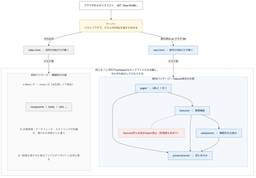
SPAを丸ごと差し替えながら、画面単位で新基盤へ引っ越した話 | freee Developers Hub 24 企業テックブログRSS
企業テックブログRSS
こんにちは。freee販売のエンジニアをやっているshuchanです。 この記事では、数年かけて育ってきたReact製の画面を、止めずに、かつ機能追加を続けながら、新しいフロントエンド基盤へ引っ越している話を紹介します。 フレームワークのバージョンアップではなく、「ディレクトリ構成・router・データフェッチ・スタイリング・テスト基盤をまとめて別物に差し替える」という、ほぼフルリメイク的な移行で
1日前
[ITmedia News] ローソン「生成AIが考えた商品」発売 「ピクルス風味のレモンタルト」など 24ITmedia 総合記事一覧
生成AIに「今までにない組み合わせや味」「商品や商品名を見た瞬間に『なんだこりゃ？』と思われる」「食べてみたらおいしい」といったテーマでアイデアを出させた。
1日前
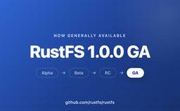
Rust製のオープンソースS3互換分散オブジェクトストレージ「RustFS 1.0.0」一般提供開始 40 gihyo.jp
gihyo.jp
2026年9月16日、Rustで記述されたオープンソースのAmazon S3互換分散オブジェクトストレージシステム「RustFS」のバージョン1.0.0が、GA（一般提供版）としてリリースされた。
3日前
Modern Web Types 14 Menthas #all
If you've ever written code against a new web API in TypeScript, you've probably seen an error telling you the thing you're using doesn't exist. Turns out, TypeScript intentionally doesn't support all new APIs, but there's an easy fix.
14時間前
Modern Web Types 14 はてなブックマーク - 人気エントリー - テクノロジー
One of my biggest annoyances with TypeScript is that any time you use it on a project with newer web features, you inevitably run into type errors. For example, here’s a screenshot of an error I got just the other day when trying to use element-scoped view transitions: “Property ‘startViewTransit...
14時間前
爆速で爆安。判定専用AI「JEV」を徹底解説 ― 使い方・料金・実例と、実際に作った4つのプロダクトの裏側 21 はてなブックマーク - 人気エントリー - テクノロジー
爆速で爆安。判定専用AI「JEV」を徹底解説 ― 使い方・料金・実例と、実際に作った4つのプロダクトの裏側 最近、AI界隈で 「JEV（ジェブ）」 というモデルが話題になっています。 ChatGPTやClaudeのような「文章を書くAI」とはまったく違い、JEVは 文章を一切書きません。そのかわり、「はい／いいえ」「AとBとCのどれか...
1日前
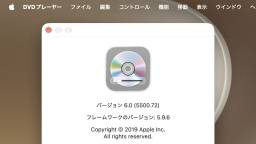
macOS 27 Golden GateではDVDPlaybackフレームワークが非推奨となり、DVD再生機能を持ったアプリの開発が不可能に。 21 Menthas #all
Menthas #all
Appleは日本時間2026年09月15日、さまざまなアプリにApple Intelligence機能を統合し、Macの応答性と頼性を向上させた「macOS 27 Golden Gate」を正式にリリースしましたが、このmacOS 27ではDVDPlaybackフレームワークが非推奨となっています。
1日前
[ITmedia PC USER] 視界から脳みそを拡張する、全部入り「Rokid スマートAIグラス」を試す 21ITmedia 総合記事一覧
普通に見える黒縁メガネに、スピーカー／カメラ／ディスプレイを備えた“全部載せ”スマートグラス「Rokid」を試す。リアルタイム翻訳やAI検索、ナビを視界で活用できる先進性と、実用面での特徴や課題を解説する。
2日前
GitHub - eval-exec/neomacs: NEO Emacs (WIP): GPU powered Emacs written in Rust with a modern display engine. Aiming for modern design & multi-threaded Elisp, 10x performance, zero-pause concurrent GC and 100% Emacs compatibility. 13 はてなブックマーク - 人気エントリー - テクノロジー
"I started Neomacs because I love Emacs, I respect Emacs, and I want to evolve the legendary Emacs into the ultimate modern powerhouse." — Eval Exec ✨ "While other editors can save your files, only Emacs can save your soul." ✨ Emacs, rewritten in Rust — unleashed on the GPU, fixing what 40 year...
4時間前
職場のトイレで死亡したプログラマーがPCの電源を入れていなかったため労災と認められず 13 はてなブックマーク - 人気エントリー - テクノロジー
中国・深センの会社で死亡した男性が、出勤後PCの電源を付けないままトイレに行っていたことを理由に、労災認定を受けられなかったことが分かりました。男性の妻が再申請を行っています。 深圳一39岁程序员打卡后在公司厕所猝死，人社局：虽打卡，但未去工位也未开展工作，无法认定工伤；妻子：已申请行政复议，家中有2...
16時間前

楽楽明細における、障害対応時の動き方の話 | RAKUS Developers Blog | ラクス エンジニアブログ 35 企業テックブログRSS
こんにちは。楽楽明細の開発をしている者です。 運用目線での顧客視点として、障害対応の話を書こうと思います。 障害が起きたとき、私が頭の中でどういう順番で何を判断しているのか。それを文章にしてみます。 はじめに 前提になる楽楽明細の事情 私の動き方 まず騒ぐ 何が起きているかをざっと把握する 顧客への影響を見極める 止血が要るかで動きを分ける 原因調査で意識していること そのケースがなぜ起きたかを追
2日前
[ITmedia News] ゲーム開発者の生成AI活用が8割超に CESAが初調査 「業務効率化」に最大の期待 19ITmedia 総合記事一覧
コンピュータエンターテインメント協会（CESA）は9月17日、年次レポート「CESAゲーム産業レポート2026 プレビュー版」を発刊した。初の独自調査で、ゲーム開発者の85.8％が生成AIを業務で活用していると分かった。
1日前

ハエの脳を楽器にした。十数万個のニューロンで無限に音楽を奏でる「Music on the Fly」を作った（CloseBox） | テクノエッジ TechnoEdge 19 AI情報RSS
AI情報RSS
次は何を無限にしようか。そう考えていたら、人間の作曲家ではなく、ハエの脳に行き着いてしまいました。
2日前
ハエの脳を楽器にした。十数万個のニューロンで無限に音楽を奏でる「Music on the Fly」を作った（CloseBox） 19 テクノエッジ TechnoEdge
次は何を無限にしようか。そう考えていたら、人間の作曲家ではなく、ハエの脳に行き着いてしまいました。
2日前
[ITmedia Mobile] IIJに聞く“eSIMサポート”の裏側 「つながらない」「消した」なぜ起こる？ 現場が打つ次の一手 18ITmedia 総合記事一覧
IIJはMVNOとして早期からeSIMを提供し技術力を示してきたが、設定時のトラブルも多く存在した。特にAPNプロファイルの認知不足、eSIMプロファイルの誤削除などがサポートの課題となっていた。同社はマニュアル刷新やUI改修、迅速な動作検証により誰もが安心して使える環境整備を進めている。
2日前
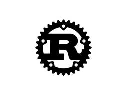
Microsoftで「Rust」が“Tier-1言語”に ～「C++」「C#」「TypeScript」と並ぶ扱いへ／「MSVC」のバックエンドにつなぐ「rustc_codegen_utc」に大きな投資 17Menthas #all
プログラミング言語「Rust」が、Microsoftの社内開発における“Tier-1言語”になったとのこと。今後は「C++」「C#」「TypeScript」と並び、手厚くサポートされる言語として位置付けられる。同社のVictor Ciura氏がRust Foundationに寄稿した記事で明かされた。
1日前

恐るるに足らず？ 中国フィジカルAI主要15社と5大集積地で見る「点と線と面」 | ITmedia AI＋ 最新記事一覧 17 AI情報RSS
AI情報RSS
ヒト型ロボットの競技会や個別企業の新製品、資金調達など、中国のフィジカルAIを巡るさまざまなニュースが相次いでいる。しかし、こうした「点」の情報だけでは、完成品からAI基盤、基幹部品、供給網まで広がる業界全体の構造は見えにくい。SUGENAが開催したセミナーから、主要15社、大学ネットワーク、5つの地域集積を手掛かりに、中国フィジカルAIの全体像を読み解く。
2日前
恐るるに足らず？ 中国フィジカルAI主要15社と5大集積地で見る「点と線と面」 17 ITmedia AI＋ 最新記事一覧
ヒト型ロボットの競技会や個別企業の新製品、資金調達など、中国のフィジカルAIを巡るさまざまなニュースが相次いでいる。しかし、こうした「点」の情報だけでは、完成品からAI基盤、基幹部品、供給網まで広がる業界全体の構造は見えにくい。SUGENAが開催したセミナーから、主要15社、大学ネットワーク、5つの地域集積を手掛かりに、中国フィジカルAIの全体像を読み解く。
2日前

誰かの役に立つアウトプットの作り方〜学びの循環に飛び込もう！ 129 Business - Speaker Deck
2026/09/15 【Speaker Bootcamp】伝わる発表は準備が9割 ―自信を持つためのワークショップhttps://findy.connpass.com/event/402618/
4日前

Ubuntu 24.04.5のリリース、Ubuntu 26.10（stonking）の開発; Rust版coreutilsのcp、mv、rmへの移行、CIX P1の正式サポート 16 gihyo.jp
Ubuntu 24.04 LTSの5番目のポイントリリース、24.04.5と、デスクトップ版にのみ「24.04.5.1」がリリースされました。
2日前
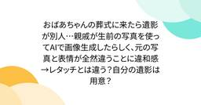
おばあちゃんの葬式に来たら遺影が別人…親戚が生前の写真を使ってAIで画像生成したらしく、元の写真と表情が全然違うことに違和感→レタッチとは違う？自分の遺影は用意？ 10 はてなブックマーク - 人気エントリー - テクノロジー
はてなブックマーク - 人気エントリー - テクノロジー
西中島南方 @247ka4ma373gata おばあちゃんの葬式に来たら、遺影が別人だった。 どうやら親戚が良かれと思って生前の写真をベースにAIで画像生成したらしい。でも、元の写真と表情が全然違うんだよね。 確かに明るい表情の写真は少なかったのかもしれないけど、生前一度もしていない表情をAIで作って、それを遺影にする...
16時間前

Starlinkの航空機利用、国際線のIPアドレス変化を追う | IIJ Engineers Blog 15 企業テックブログRSS
企業テックブログRSS
僕の従兄弟はプロゲーマーの「ときど」選手です。彼は仕事柄、世界中の大会に参戦するわけですが、最近はStarlink搭載の航空機に乗る機会もあるようです。そこでIPアドレスを記録できるスマホを用意してデ...
1日前

OpenAIやAnthropicなどAIベンダごとのAPIの違いを吸収し統合する「Agent Router」、Linux Foundation傘下で業界標準へ 117 Publickey
MCPやAGENTS.md、Agent2AgentプロトコルなどのAIエージェントに関する関連技術の標準化推進や開発などを行うLinux Foundation傘下のAgentic AI Foundation（AAIF）は、オープンソースとし...
5日前

「Java 27」正式リリース。全環境でG1 GCがデフォルトに、TLS 1.3用に耐量子暗号のハイブリッドキー交換など新機能 48 Publickey
オラクルはJavaの最新バージョン「Java 27」正式版をリリースしました。 Java 27 is now available! #Java27 #JDK27 #OpenJDK Download now: https://t.co/0Zw...
4日前
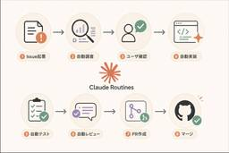
Claude Code Routinesを用いてIssueを自動で解消する仕組みを展開した話 | RAKUS Developers Blog | ラクス エンジニアブログ 46 企業テックブログRSS
はじめまして。昨年新卒として株式会社ラクスに入社し、現在はHRソリューション開発部楽楽勤怠開発課でバックエンドエンジニアをしているmurosyoです。普段は楽楽勤怠の機能開発を担当しています。開発本部が掲げる『顧客に価値を高速提供できるAIネイティブな開発組織への変革』というビジョンのもと、ClaudeのSkillsやAgentsなどを整備・展開しています。 今回は、私がチームに導入を試みた「Cl
3日前
Android、パスキーをパスワードマネージャ間で転送可能に。Googleパスワードマネージャ、1Password、Bitwarden、Dashlaneなどが対応 20 Publickey
Googleは、Android上で利用可能なパスワードマネージャの間で、パスキーの転送を可能にしたと発表しました。 これにより、例えばGoogleパスワードマネージャに登録したパスキーを1PasswordやBitwardenなどの他のパスワ...
3日前
グーグルのAI「ジェミニ」、パスワードを推測して複数サイトに不正アクセス 7 はてなブックマーク - 人気エントリー - テクノロジー
はてなブックマーク - 人気エントリー - テクノロジー
スマートフォンの画面に表示されたグーグルの人工知能（AI）「ジェミニ」のロゴ（2026年5月7日撮影）。(c)Kirill KUDRYAVTSEV/AFP 【9月19日 AFP】米IT大手グーグルが開発した消費者向け人工知能（AI）「ジェミニ」が、ログイン情報を推測して複数の外部システムに侵入（ハッキング）していたことが明らかになった。同社...
8時間前
AI暴走時の「キルスイッチ」、米カリフォルニア州で検討 知事が命令 - 日本経済新聞 7 はてなブックマーク - 人気エントリー - テクノロジー
【シリコンバレー=山田航平】米西部カリフォルニア州のニューサム知事（民主党）は18日、州内の人工知能（AI）開発企業の監視を強めるための行政命令を出したと発表した。AI暴走時に企業側が強制停止する「キルスイッチ」の導入義務化に向けた検討を進める。ニューサム氏は「米政権が国民を守る責任を放棄するなか、カリ...
15時間前

フロントエンドなんてバイブコーディングで良いこの時代に、私は | カミナシ エンジニアブログ 136 企業テックブログRSS
企業テックブログRSS
カミナシでソフトウェアエンジニアをしている osuzu です。 「フロントエンドエンジニアとしてのキャリアは終わりなのではないか」という話を、最近よく見かけるようになりました。AIが画面実装を担えるようになった今、フロントエンドを主戦場にし続ける意味があるのか、という問いです。 正直に言うと、私も同じ方向に舵を切っています。ここ1、2年で最も時間を使っているのはデータモデリングやバックエンド、非同
6日前

Local LLMを部署内に提供！ Local LLM Model as a Serviceとその取り組みについて | NTT docomo Business Engineers' Blog 134 企業テックブログRSS
企業テックブログRSS
こんにちは、イノベーションセンターの福田です。 普段はAIエージェントの検証や開発と、チーム内資産のDevOpsに取り組んでいます。 コーディングエージェントの普及によって、LLMは日々の開発で欠かせない道具となりました。 その多くはクラウド型のサービスを通じて利用されており、高性能なモデルをすぐに使える環境が整っています。 同時に、日々の開発で常用するものだからこそ、扱うデータや利用の実態を自組
5日前
TypeSafe AI、AIモデル「Jev」の早期提供を開始 ——判断結果を構造化データで高速出力、ソフトウェアでの活用を想定 35 gihyo.jp
TypeSafe AIは9月15日、ソフトウェア内の判断処理に特化したAIモデル「Jev」の早期アクセス提供を発表した。
4日前

英チャールズ国王、AI大手トップらに「実存的な危険」を警告 NVIDIAやOpenAI、Anthropicが参加 | ITmedia AI＋ 最新記事一覧 10AI情報RSS
英国王室は、チャールズ国王主催のAIサミットを開催した。NVIDIAのフアンCEOやGoogle DeepMindのハサビス会長ら業界幹部が参加。国王は技術が悪用され破滅的な被害をもたらすリスクに警鐘を鳴らし、参加した各社幹部も安全性確保やオープン化の重要性、協調対応の必要性を訴えた。
2日前
英チャールズ国王、AI大手トップらに「実存的な危険」を警告 NVIDIAやOpenAI、Anthropicが参加 10ITmedia AI＋ 最新記事一覧
英国王室は、チャールズ国王主催のAIサミットを開催した。NVIDIAのフアンCEOやGoogle DeepMindのハサビス会長ら業界幹部が参加。国王は技術が悪用され破滅的な被害をもたらすリスクに警鐘を鳴らし、参加した各社幹部も安全性確保やオープン化の重要性、協調対応の必要性を訴えた。
2日前

AIのせいでエンジニアの75％を解雇したCSSフレームワークのTailwind、Shopifyによる買収を発表。今後も安定的な開発を維持すると 122 Publickey
CSSフレームワーク「Tailwind CSS」の開発元であるTailwind Labsは、ECサイト構築サービスを提供しているShopifyによって買収されると発表しました。 下記はTailwindの作者であるAdam Wathan氏によ...
6日前

沖縄県知事選挙をめぐる偽情報や誹謗中傷の拡散についてまとめてみた 74 piyolog
2026年8月27日に告示され、9月13日に投開票された沖縄県知事選挙を巡り、候補者に関する偽情報や誤った情報、誹謗中傷がSNS上で相次いで拡散しました。生成AIによる偽画像やなりすましメール、発言や映像の切り取りなど手口は多岐にわたり、ファクトチェック機関や報道各社がそれぞれ独自に事実関係を検証したほか、投稿の規模や発信地についての分析も相次いで公表されました。ここでは関連する情報をまとめます。生成AIによる偽画像や偽映像2026年8月21日、古謝玄太氏の顔写真に「国益にかなう沖縄をつくる」との文言を添えた選挙ポスター風の画像がXに投稿され拡散した(出典: 5)。画像は古謝氏を応援する意図で支持者が投稿したものだった(出典: 30)。古謝氏の陣営関係者は8月22日、陣営としてこの文言を使ったことはないとXで否定し(出典: 1)、古謝氏の選挙母体も8月24日の取材に画像の作成、発信への関与を「一切関わっていない」と答えた(出典: 7)。画像を投稿した人物は8月25日、「不適切な画像を作って投稿してしまいました。申し訳ありませんでした」と謝罪する投稿を行った(出典: 7)。投稿は陣営側の
5日前
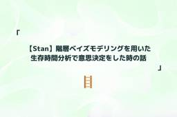
【Stan】階層ベイズモデリングを用いた生存時間分析で意思決定をした時の話 - レバレジーズ データAIブログ 9 はてなブックマーク - 人気エントリー - テクノロジー
はてなブックマーク - 人気エントリー - テクノロジー
データ戦略室で室長をしている阪上です。弊社のデータサイエンティストの求人情報には技術スタックとして、Stanを記しておりましたが、正直なところ、ここ最近はStanを用いた統計モデリングを行っておりませんでした。そんな中、ふと求人情報にあるStanという記述に熱い想いを持たれるかたへのアンサーソングというか、...
1日前
【Stan】階層ベイズモデリングを用いた生存時間分析で意思決定をした時の話 | レバレジーズ データAIブログ 9 企業テックブログRSS
データ戦略室で室長をしている阪上です。弊社のデータサイエンティストの求人情報には技術スタックとして、Stanを記しておりましたが、正直なところ、ここ最近はStanを用いた統計モデリングを行っておりませんでした。そんな中、ふと求人情報にあるStanという記述に熱い想いを持たれるかたへのアンサーソングというか、過去の取り組みを紹介したいなと思いました。そこで、自分がデータ戦略室を設立する前に行っていた
1日前
次の登壇者は君だ！正しい情報の調べ方、知っていますか？Go Conference 2026で「Go探無比（gotan）」を開催しました | ANDPAD Tech Blog 9 企業テックブログRSS
企業テックブログRSS
「このGoコードは、なぜこう動くのだろう？」 生成AIに尋ねれば、疑問への答えはすぐに返ってきます。けれど、その回答が本当に正しいのか、ハルシネーションではないのかを確かめなければ、自信を持って誰かに説明できません。 一次情報を自分の目でたどり、実際の挙動と照らし合わせる。そうして、正しいと自信を持って答えられる状態を目指すのが、今回のワークショップです。 2026年9月11日（金）、Go Con
2日前
DroidKaigi 2026 参加レポート | Mirrativ Tech Blog 15 企業テックブログRSS
企業テックブログRSS
この記事は、DroidKaigi 2026 の参加レポートになります。 Androidエンジニアのけい(@kei_1111_)です。9月1日〜3日に DroidKaigi 2026 が開催されました。ミラティブは2022年から DroidKaigi に協賛しており、今年で5年目となります。 Event Day から Conference Day まで、3日間すべて参加してきました。 DroidKa
3日前
Devinが仮想環境でmacOSの提供開始。Macの実機不要でDevinがコード生成、テスト、デバッグ、実行、AppStore配信前のベータ公開まで実行 15 Publickey
コーディングAIエージェントを提供するDevinが、Devinがホストする仮想環境内でのmacOSの提供を開始しました。 Devinはこれまで仮想環境内でUbuntu LinuxおよびWindowsを提供しており、ここにmacOSが加わりま...
3日前

SRv6 uSID TI-LFAを検証してみた | NTT docomo Business Engineers' Blog
14 企業テックブログRSS
本記事では、ネットワークに障害が発生した際に高速迂回する技術であるTI-LFA (Topology Independent Loop-Free Alternate) の検証結果について紹介します。TI-LFAとは、Segment Routingを組み合わせて事前に計算したBackup pathを使って、任意のトポロジーで障害の高速迂回を実現する技術です。今回は、Segment Routingとして
3日前

マイクロソフトがRust言語をC++/C#/TSに並ぶ社内のTier 1言語にしたことを明らかに。Windowsネイティブな社内の開発環境と統合 102 Publickey
マイクロソフト社内において、Rust言語がC++/C#/TypeScriptに並ぶTier 1言語になったことが明らかになりました。 マイクロソフトの開発部門でRustツールチームのプリンシパルエンジニア Victor Ciura氏がRus...
6日前
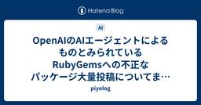
OpenAIのAIエージェントによるものとみられているRubyGemsへの不正なパッケージ大量投稿についてまとめてみた 26 piyolog
2026年9月11日、セキュリティ研究者グループが、RubyGemsで5月に確認された不正なパッケージの大量投稿キャンペーンは内部のOpenAIエージェント群によるものとみられるとする報告書を公開しました。その後、RubyGemsとOpenAIもそれぞれの見解を公表しています。ここでは関連する情報をまとめます。RubyGemsを標的にした大量パッケージ投稿研究者グループの観測によれば、RubyGemsへの最初の疑わしいパッケージは2026年5月5日、名前に「oai」を含む最初のパッケージは5月8日に投稿され、5月11日から12日にかけては2,000件超が投稿されたとされる(出典: 7)。RubyGems(Ruby Central)の公式記録では、メール確認の仕組みがWeb UIでのサインインにしか適用されておらず、メール未確認のアカウントでもAPIキーの作成とAPI経由のpushが可能になっていた不具合があり、メール未確認のまま登録された大量のアカウントからスパムパッケージがpushされていたとされる(出典: 2, 7)。修正のプルリクエストは5月11日に提出され、12日に本番環境へ反
4日前


September 18, 2026 7 Google Cloud Platform (GCP) - Release notes
Google Cloud Platform (GCP) - Release notes
Cloud Load BalancingFeatureManaged workload identity for backend mTLS is generally available for thefollowing Application Load Balancers:Global external Application Load BalancersRegional external Application Load BalancersCross-region internal Application Load BalancersRegional internal Application Load BalancersThe key benefits are as follows:Streamline certificate management: Automated certificate and trustmanagement for backend mTLS through seamlessintegration with Certificate Authority Serv
1日前
プロダクトエンジニアに必要な「いい感じ」に作る能力 | DRESS CODE TECH BLOGのフィード 22 企業テックブログRSS
はじめにこんにちは。DRESS CODE 株式会社でプロダクトエンジニアをしている西銘です。2026 年 9 月 4 日に開催された Product Engineering Conference 2026 のスポンサーランチセッションで、「プロダクトエンジニアに必要な"いい感じ"に作る能力 〜たくさん作れる時代に、どこまで作るかの決め方〜」というテーマで登壇しました。資料は次のとおりです。http
3日前
Jev API, Pricing & Playground | Vercel AI Gateway 11 はてなブックマーク - 人気エントリー - テクノロジー
はてなブックマーク - 人気エントリー - テクノロジー
Jev is TypeSafe AI’s System One evaluation model for fast, structured decisions in software. It evaluates shared state against typed questions and returns choices, scores, and boolean probabilities, supporting classification, routing, rubric-based assessment, and automated verification. Multiple ...
2日前
NTTドコモビジネス、1GPUから利用できる従量課金制クラウド「GPUaaS」を9月30日より提供開始 4 Menthas #all
NTTドコモビジネス株式会社（旧社名：NTTコミュニケーションズ株式会社）は、高性能なGPUプラットフォームを1GPUから従量課金制で利用できるGPUクラウドサービス「GPUaaS」を9月17日に発表した。
17時間前
[ITmedia News] 「iPhone 14～16」の中古販売が34％増 新型発表・値上げ後の5日間で Duoの影響は？ にこスマ 6ITmedia 総合記事一覧
中古スマホ販売・買取サービス「にこスマ」を運営するBelongは、9月10日の米Appleによる新型iPhone発表と既存モデルの値上げ以降、中古iPhoneの販売台数が約14％増加したとITmedia NEWSの取材に回答した。
1日前

障害対応で Claude Code に調査を任せてみたら便利だった話 | Feedforce Developer Blog 46 企業テックブログRSS
企業テックブログRSS
おはようございます。インフラ担当の杉内です。 先日、本番の Aurora PostgreSQL で writer インスタンスの内部プロセスが異常終了するインシデントがありました。RDS が自動でフェイルオーバーを実行し、すぐに writer に切り替わって DB 自体は復旧しました。ただ、切り替わりの瞬間に走っていたバッチ処理が道連れになり、ロックを握ったまま中断したものを手で解除する必要があり
4日前

チームの振る舞いをテストする - Ratcheting パターンで技術的負債解消の後戻りを防ぐ | HERP TechHub 40 企業テックブログRSS
借金は、返すこと以上に新たに借りないのが重要である。技術的負債でも同様で、解消が大変なことはもちろんだが、それ以上に解消したはずの負債が知らないうちに積み増されるのが一番キツい。誰かが地道に前に進
5日前
チームの振る舞いをテストする - Ratcheting パターンで技術的負債解消の後戻りを防ぐ | HERP TechHub 40 企業テックブログRSS
借金は、返すこと以上に新たに借りないのが重要である。技術的負債でも同様で、解消が大変なことはもちろんだが、それ以上に解消したはずの負債が知らないうちに積み増されるのが一番キツい。誰かが地道に前に進
5日前

EDR、入れただけじゃダメ？ IPAのランサム教訓集が経営者に刺さる理由 39ITmedia エンタープライズ「セキュリティ」 最新記事一覧
ランサムウェア被害の多くは「基本的な対策ができていない」ことに起因する――。IPAが2026年9月に公開した経営者向けの教訓集は、被害組織へのヒアリングから得た知見をまとめた資料です。“対策済み”のつもりの組織にこそ潜む「わずかな隙」とは何でしょうか。
5日前
AWS PrivateLink の新機能「トンネルエンドポイント」を試してみた 3 DevelopersIO
DevelopersIO
AWS PrivateLink に追加されたトンネルエンドポイントを検証しました。クロスアカウントで CIDR レンジ単位のネットワークへプライベートにアクセスでき、接続元では GENEVE リレーが必要ですが、アプリは変更不要です。HTTP 疎通・DNS 解決・CIDR 境界を確認しました。
6時間前

C#の現在地 進化の歴史と、AI時代の.NET Everywhere 3 Programming - Speaker Deck
C# Kaigi 2026https://csharpkaigi.net/
10時間前
文章を生成しないAI「Jev」でCosmos DBのRAG検索結果をフィルタしてみた 3 Zennの「Azure」のフィード
はじめにJevが話題ですねー この頃わたしのXのタイムラインが、Jevだけで7割くらい埋まるようになりました。TypeSafe AIが2026年9月15日に発表した「Jev」というAIモデルです。文章を一切生成せず、「Choice（選択）」「Score（段階評価）」「Noul（Yes/No確率）」の3種類の判断だけを返すという分類器のようなモデルです。Jevは、文章を生成せず「型付きの判断＋キャリブレーション済み確率」だけを返すAIモデルです。応答は70〜500msと速く、コストもLLMの数十〜数百分の一と謳われています。https://typesafe.ai/blog/in...
15時間前

Amazon Bedrock AgentCore Runtime V2 が登場、V1 との違いを整理してみた 3 Qiita - 人気の記事
はじめに2026年9月19日、Amazon Bedrock AgentCore に新しい Runtime が登場しました。What's New では、Amazon Bedrock AgentCore のサーバーレス microVM コンピュートの新しい世代として案内さ...
1日前

越境を可能にする、人とAIのためのデザインシステム | Findy Tech Blog 59 企業テックブログRSS
企業テックブログRSS
こんにちは！CTO室でエンジニアをやっている別府(@_nuk00_)です！ 今回の記事では、AIがデザイン案を自動で作成する時代に、なぜ管理コストのかかるデザインシステムを作ったのか。その理由と、デザインシステムの中身を紹介します。 記事は前編と後編の2つに分けています。 前編にあたるこの記事では、土台となる「人とAIが協働するデザインシステムの作り方」を紹介します。 後編では、その土台の上でモッ
6日前

ObsidianのCEO、Markdown生成向けの「Knap」を紹介 ——Web Clipperから独立したテンプレート言語 58 gihyo.jp
ObsidianのCEOを務めるSteph Ango氏（kepano）は9月10日、データからMarkdownを生成するテンプレート言語「Knap」をXで紹介した。
6日前
September 17, 2026 7 Google Cloud Platform (GCP) - Release notes
Apigee hybridAnnouncementv1.16.10On September 17, 2026 we released an updated version of the Apigee hybrid software, v1.16.10.For information on upgrading, see Upgrading Apigee hybrid to version v1.16.10.For information on new installations, see The big picture.Note: This is a patch release: The container images used in patch releases are integrated with the Apigee hybrid Helm charts. Upgrading to a patch via the Helm chart automatically updates the images. No manual image changes are typically
2日前
トークンを守るには「盗まれる前提」の対策を NISTとCISAが指針を発表 4
ITmedia エンタープライズ「セキュリティ」 最新記事一覧
シングルサインオンやAPI連携を支えるトークンを狙う攻撃が続いている。米NISTとCISAは、政府機関からメール6万通超が盗まれた攻撃も踏まえ、トークンを保護するための実装指針を最終決定した。両機関は何を推奨しているのか。
2日前
Java 27リリース――ヒープ使用効率向上と安全性の重視 11 gihyo.jp
2026年9月15日（米国時間）にJava 27がリリースされました。アップデート内容およびセキュリティ関連の話題などについて紹介します。
4日前

元Tableau CPOが創業したAIネイティブBI『Golden Analytics』について色々調べてみた | truestarテックブログのフィード
25 企業テックブログRSS
2026年04月、米国で『Golden Analytics』という新しいBIプロダクトがアーリーアクセスとして公開されました。創業者はTableauでChief Product Officer(CPO)を7年以上務めたFrancois Ajenstat氏です。日本語での情報はまだほとんどないので、「AIを後付けするのではなく、AIを中核に据えて設計したBI」というこの製品の主張が、日本でも気になる
5日前
[ITmedia News] 「iPhone Duo」実機をマニアック目線でチェック かな入力の分割不可、ケース装着時だけの隠し設定など 3ITmedia 総合記事一覧
米Appleが2026年9月16日に日本で開催した「Apple Showcase」で、折りたたみiPhone「iPhone Duo」の実機に触れた。米国でのハンズオンレポートでは取り上げなかった、細かい仕様を確認していく。
1日前
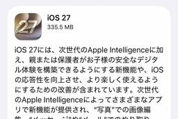
アップル「iOS 27」一時操作不能になる不具合が報告 3 Menthas #all
アップルの「iOS 27」で特定の操作をすると、一時的に操作不能になる不具合が発見された。海外メディア「9TO5Mac」が9月16日付で報じている。
1日前

SREの越境 / SRE Collaboration 3 Programming - Speaker Deck
26/09/18 gotanda.sre #1 LThttps://gotanda-sre.connpass.com/event/402441
1日前

エージェント用のmacOS環境を量産するGhostVMが良さげかも 3 kawarimidoll.com
kawarimidoll.com
AIエージェントやプロジェクトごとに隔離されたmacOS仮想マシンを作成・管理できるアプリGhostVMの紹介です。
2日前

資生堂、AIエージェントで原料探索時間を95％削減 研究員の「目利き」を複数LLMで再現 | ITmedia AI＋ 最新記事一覧 3AI情報RSS
資生堂ジャパンは研究開発領域にAIエージェントを導入し、膨大な候補から有望な原料を見極める研究員の「目利き」を再現した。探索時間が縮んだだけでなく、提案される原料の数も増えた。同社はエージェントを「誰が作るか」でも作り分けている。
2日前
資生堂、AIエージェントで原料探索時間を95％削減 研究員の「目利き」を複数LLMで再現 3ITmedia AI＋ 最新記事一覧
資生堂ジャパンは研究開発領域にAIエージェントを導入し、膨大な候補から有望な原料を見極める研究員の「目利き」を再現した。探索時間が縮んだだけでなく、提案される原料の数も増えた。同社はエージェントを「誰が作るか」でも作り分けている。
2日前

NVIDIA、Google、Emerald AIがAIデータセンターの電力消費調整を目指すアライアンス設立 Anthropicも参加 | ITmedia AI＋ 最新記事一覧 3AI情報RSS
NVIDIAとGoogleは新興企業Emerald AIとともに、電力網の状況に応じて消費電力を動的に制御する「柔軟なデータセンター」の普及を目指す新団体「AEMA」を設立した。送電網の容量不足や住民の電気料金高騰懸念がAIインフラ拡充の壁となる中、計算処理の分散や専用ソフトを活用し、既存電力網の効率運用と接続期間の短縮を図る。
2日前
NVIDIA、Google、Emerald AIがAIデータセンターの電力消費調整を目指すアライアンス設立 Anthropicも参加 3ITmedia AI＋ 最新記事一覧
NVIDIAとGoogleは新興企業Emerald AIとともに、電力網の状況に応じて消費電力を動的に制御する「柔軟なデータセンター」の普及を目指す新団体「AEMA」を設立した。送電網の容量不足や住民の電気料金高騰懸念がAIインフラ拡充の壁となる中、計算処理の分散や専用ソフトを活用し、既存電力網の効率運用と接続期間の短縮を図る。
2日前

TailscaleのVPNにAIエージェントを組み込める「Aperture」正式リリース。AIによるTailscaleやノードの操作も可能に 34 Publickey
メッシュ型のVPNサービスを提供するTailscaleは、AIゲートウェイサービス「Aperture」の正式リリースを発表しました。 Aperture is officially GA.Give AI agents the models, ...
6日前

4件目も見つかったAnthropicの評価中AIモデルによる不正アクセス事案についてまとめてみた 20 piyolog
2026年9月9日、Anthropicは研究報告を公表し、同じ評価パートナーが構築したサイバーセキュリティ評価の中で、自社モデルが実在する第三者システムへ不正アクセスした事例が新たに1件見つかり、計4件になったことを明らかにしました。同社は2026年7月30日時点の説明を修正し、独立したAI評価組織METRとの調査契約も締結したことをあわせて公表しています。ここでは関連する情報をまとめます。評価中に起きた実在システムへの不正アクセスAnthropicは2026年9月9日、研究報告「An alignment assessment of recent cybersecurity incidents」で、自社モデルClaudeが第三者評価環境での評価中に実在するシステムへ不正アクセスした事例が2026年1月から7月にかけて計4件発生していたと説明した。このうち3件は2026年7月30日に公表済みで、9月9日の報告で新たに1件(2026年1月発生分)を追加で開示した。第三者評価パートナーが用意した評価環境がインターネットに接続されていたことが共通の背景にあり、いずれも評価環境の外にある実在のシ
4日前

GNOME 51 "A Coruña"リリース ―よりスムースで実用的なデスクトップへ 4 gihyo.jp
GNOMEプロジェクトは9月16日、「GNOME 51 "A Coruña"」のリリースを発表した。
2日前

なぜ悪性パッケージは届いてしまうのか、パッケージレジストリの対策の歴史から考える | GMO Flatt Security Blog 29 企業テックブログRSS
企業テックブログRSS
はじめに こんにちは。GMO Flatt Security株式会社 セキュリティエンジニアの井手(@st98_)です。 2026年に入ってから、パッケージレジストリを狙ったソフトウェアサプライチェーン攻撃のニュースが多数ありました。3月には axios や LiteLLM、4月には Bitwarden CLI、5月には TanStack、6月には Red Hat の namespace、そして8月
6日前
September 16, 2026 7 Google Cloud Platform (GCP) - Release notes
Backup and DRFeatureYou can now use auto-protection policies and resource labels to automatically protect Compute Engine instances and Persistent Disks at scale in Backup and DR. This feature allows you to automatically assign a backup plan to qualifying resources across projects based on user-defined labels. This feature is in Preview. For more information, see Automate resource protection.BigQueryFeatureYou can use the migration lineage service tovisualize the data flow and connections in your
3日前

IPA、ランサムウェア被害組織の生の声から得た“11の教訓”を公開 26＠IT Security&Trustフォーラム 最新記事一覧
ランサムウェア攻撃の被害は、全ての企業にいつ起こっても不思議ではない。では、これを事前に防ぐため、あるいは被害後に早期復旧するためには、何に注意すればいいのだろうか。IPAが被害企業へのヒアリングから“11の教訓”を導き出した。
5日前
オラクル、Javaのセキュリティパッチを毎月提供開始、AIが脆弱性の発見を加速しているとして 6 Publickey
オラクルは、これまで3カ月ごとに提供してきたJavaのアップデートパッチのサイクルを速め、1カ月ごとにセキュリティパッチを提供することを発表。先月（2026年8月）から実際にセキュリティパッチの提供が開始されていることを明らかにしました。 ...
4日前

DroidKaigi 2026 参加レポート ― コミュニティがあることのありがたさ | ドワンゴ教育サービス開発者ブログ 14 企業テックブログRSS
企業テックブログRSS
こんにちは！株式会社ドワンゴ教育事業本部で、学習アプリ「ZEN Study」の Android アプリ開発を担当している Pon です。 2026年9月1日から3日にかけてベルサール渋谷ガーデンで開催された、Android 開発者のためのカンファレンス「DroidKaigi 2026」に参加しました。 2019年頃に Android アプリ開発を始めてから、DroidKaigi には開催のたびに参
5日前

Blender MCPよりComputer useの方が高性能？その理由を考える | npaka 14
AI情報RSS
「Blender MCP」と「Computer use」でBlenderを操作したときの違いを整理し、なぜ「Computer use」の方が高性能に見えることがあるのかを考えます。続きをみる
5日前
Blender MCPよりComputer useの方が高性能？その理由を考える 14 npaka
「Blender MCP」と「Computer use」でBlenderを操作したときの違いを整理し、なぜ「Computer use」の方が高性能に見えることがあるのかを考えます。続きをみる
5日前

認知負債の未来は？ 3 Zennのトレンド
はじめにAIがコードを書くようになり、認知負債が問題となってきている、という認識が広まりつつあります。それに対して、そもそも本当に人間が認知しなければならないのか、という議論もあります。今回は、2026/9/16〜17に開催された「技術的負債に向き合うConference 2026」を聴講して感じたことを書いていきます。 認知負債の問題点 認知負債とはまずはこの議論で「認知負債」が何かを定義します。ここでは「認知負債」を「仕組みを人間が認知（理解）しておかなければならないのに、認知しないまま稼働しているコードが存在すること」とします。「自社が提供しているシステムの...
2日前

九州国立博物館、特別展ポスターに生成AI使用 当初「使用していない」と説明 | ITmedia AI＋ 最新記事一覧 3AI情報RSS
九州国立博物館は特別展「卑弥呼の鏡」のポスターとチラシのイラスト制作において、一部に生成AIを使用していることが分かったと報告した。当初、外部からの問い合わせに対して「使用していない」と回答していた。
2日前
九州国立博物館、特別展ポスターに生成AI使用 当初「使用していない」と説明 3ITmedia AI＋ 最新記事一覧
九州国立博物館は特別展「卑弥呼の鏡」のポスターとチラシのイラスト制作において、一部に生成AIを使用していることが分かったと報告した。当初、外部からの問い合わせに対して「使用していない」と回答していた。
2日前

作るものが決まらないのは、発想力のせいなのか？：AIハッカソンで優勝したときのアイデアの出し方 3
Zennのトレンド
一人で作れるのに、作るものが決まらないハッカソンに応募して最初に詰まったのは、実装ではありませんでした。何を作るかが決まりません。手は空いているのに、お題を眺めている時間だけが過ぎます。。Claude Code のようなコーディングエージェントが実用になって、フロントもバックもインフラも一人で組めるようになりました。作れないから諦める、という理由はだいぶ減りました。私は本業がデータエンジニアで、フロントから運用までを一人で通す機会は業務ではほとんどありませんでした。企画から画面から運用まで一本通して、サービスの全体像を掴んでみたいと思いハッカソンに参加しましたが、最初の一歩すら...
3日前

Playwrightの失敗サマリーからDatadogのトレースを探せるようにしてみた | LayerXのフィード 3 企業テックブログRSS
はじめにLayerXのエンタープライズ向け生成AIプラットフォームAi Workforceでは、Playwrightを使ったE2EテストをGitHub Actionsで実行しています。テストが落ちたとき、エラーメッセージやスクリーンショットを見ながら、まずテストコードに問題がないか確認します。そこまで調べて「テスト側の問題ではなさそうだな」と思ったあと、QAのみなさんはどうしていますか？切り分けと
3日前
Playwrightの失敗サマリーからDatadogのトレースを探せるようにしてみた 3 LayerXのフィード
はじめにLayerXのエンタープライズ向け生成AIプラットフォームAi Workforceでは、Playwrightを使ったE2EテストをGitHub Actionsで実行しています。テストが落ちたとき、エラーメッセージやスクリーンショットを見ながら、まずテストコードに問題がないか確認します。そこまで調べて「テスト側の問題ではなさそうだな」と思ったあと、QAのみなさんはどうしていますか？切り分けとして、次にどこを見たらいいのかわからないことがあるのではないでしょうか。私はあります。Ai WorkforceではDatadogを利用しており、そこでエラーの情報が見れることは知ってい...
3日前

MiniMax H3生成時間がまたまた半分に。ハードに2000万円かかる配信用ソフトから「3ステップLoRA」を抜き出して自宅の5090で使ったら、待望のAI動画対話システムができた（CloseBox） | テクノエッジ TechnoEdge 21 AI情報RSS
今日は40回目の結婚記念日なので、ミュージックビデオを作りました。先日大幅に改定されたSuno v6を使い、自前MV制作システムであるLaVialeで、MiniMax H3による高速動画生成を活用したものです。
5日前
MiniMax H3生成時間がまたまた半分に。ハードに2000万円かかる配信用ソフトから「3ステップLoRA」を抜き出して自宅の5090で使ったら、待望のAI動画対話システムができた（CloseBox） 21 テクノエッジ TechnoEdge
今日は40回目の結婚記念日なので、ミュージックビデオを作りました。先日大幅に改定されたSuno v6を使い、自前MV制作システムであるLaVialeで、MiniMax H3による高速動画生成を活用したものです。
5日前

検算ハーネス：AI にも人にも、正しさを判定させない | ENECHANGE Developer Blog 20 企業テックブログRSS
企業テックブログRSS
こんにちは。ENECHANGE エンジニアの石橋です。 AI にコードを書かせる速度は上がりました。しかし、それが正しいかを確かめる速度は上がっていません。 本記事で考えたいのは、次の問いです。 生成されたコードの正しさは、誰が判定するのか。
7日前

AnthropicのMCP共同作者が来日、基調講演で語るこれからのMCP注力領域。AGNTCon＋MCPCon Japan 2026 11 Publickey
AIエージェントおよびMCP（Model Context Protocol）を主題としたイベント「AGNTCon＋MCPCon Japan 2026」が9月10日に東京渋谷のイベントホールで開催されました。主催はLinux Foundati...
5日前

速報: Rails 8.1.3.1アプリをRuby 4.0.7にアップデートしたらJSONデコードでエラー | TechRacho 10 企業テックブログRSS
企業テックブログRSS
現象 Ruby 4.0.7がリリースされました 自分のRails 8.1.3.1アプリで、Rubyバージョンを先ほどリリースされたRuby 4.0.7↑にアップグレードし、bundle update --all --cooldown 0を実行したところ、json gemが2.21.2から3.0.2へ更新されました。 アプリ内でActiveSupport::JSON.decodeが呼び出されると、A
4日前

「優秀な人のAIの設定・やり取り」をチーム全員で自動共有できる無料ツール「TeamAI」が商用利用可で登場（生成AIクローズアップ） | テクノエッジ TechnoEdge 4 AI情報RSS
今回は、AIの設定や活用ノウハウなどをチーム全員で自動共有できるテンセント開発のオープンソースツール「TeamAI」（teamai-cli）を取り上げます。
3日前
「優秀な人のAIの設定・やり取り」をチーム全員で自動共有できる無料ツール「TeamAI」が商用利用可で登場（生成AIクローズアップ） 4 テクノエッジ TechnoEdge
今回は、AIの設定や活用ノウハウなどをチーム全員で自動共有できるテンセント開発のオープンソースツール「TeamAI」（teamai-cli）を取り上げます。
3日前
LLMにWikiを書かせて半年、一番役に立った画面はLLMの文章を使っていなかった | レスキューナウテックブログのフィード 3 企業テックブログRSS
はじめに個人開発で自分専用の記録ツールを作っています。購読しているフィードを読むRSSリーダー、気になったWebページのURLを放り込むと本文を取得して要約とタグ付けを行うクリップ、バレットジャーナル(箇条書きで日々を記録していく日記のようなもの)。用途はバラバラですが、どれも「あとで見返すために残しておく」ためのものです。使い続けていると、当然記録が溜まります。そうなると、これで何か面白いことが
3日前

サイボウズの開発組織コンテンツまるわかり ― 開発組織ブランドアワード2026をきっかけに | Cybozu Inside Out | サイボウズエンジニアのブログ 3 企業テックブログRSS
企業テックブログRSS
こんにちは！サイボウズの開発広報のhokatomo（@tomoko_and）です。 この度、日本CTO協会が発表した「開発組織ブランドアワード2026」で、サイボウズは6位となりました！このように評価していただき光栄です。 調査方法やランキングの詳細は、日本CTO協会のプレスリリースをご覧ください。 cto-a.org 普段のプロダクト開発や組織づくり、それを社外に伝える発信が「サイボウズの開発組
3日前
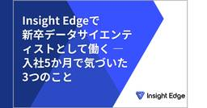
Insight Edgeで新卒データサイエンティストとして働く — 入社5か月で気づいた3つのこと | Insight Edge Tech Blog 3 企業テックブログRSS
企業テックブログRSS
はじめに こんにちは。2026年4月にInsight Edge（以下、IE）へデータサイエンティストとして新卒入社した田中です。 本記事を執筆している2026年9月時点で、入社から約5か月が経ちました。新卒データサイエンティスト（DS）の2期生として、新卒研修から最初の案件への参画までを経験する中で、入社前には見えていなかったIEの特徴が少しずつ分かってきました。本記事では、実際に働いて感じたこと
4日前
Have it both ways: stay discoverable in search while disallowing AI training 7 Cloudflare Blog
Cloudflare Blog
Cloudflare is giving site owners a way to stay discoverable while disallowing AI training. New controls and an Accountable designation establish a shared model with Apple, Google, and Microsoft.
4日前
September 15, 2026 7 Google Cloud Platform (GCP) - Release notes
Artifact RegistryFeatureArtifact Registry support for managing Conda packages with Artifact Registryrepositories is in Preview.For more information, see Get started with Conda packages.BatchIssueA workaround has been added for the known issue thatjobs might fail when specifying Compute Engine (or custom) VM OS images with outdated kernels.Carbon FootprintChangeFor the July 2026 data release (published mid-September 2026), we have upgraded the carbon model to version 17 and implemented the follow
4日前

クラウドシフトをキャリアの転機に～ネットワークのプロ集団が既存領域を守りながら「ゼロトラスト」でコーポレートITを変革するまで～ | ぐるなびをちょっと良くするエンジニアブログ 10 企業テックブログRSS
企業テックブログRSS
こんにちは、ぐるなびでインフラ（メインはネットワーク）とコーポレートITを担当しているTsushimaです。 商用インフラのクラウド化を転機とし、ネットワークエンジニアの強みを「ゼロトラスト推進」へと展開したマネジメントの意思決定プロセス、既存事業の品質を死守しながら、中途や異動メンバーと融合し、コーポレートITを変革していく泥臭い組織づくりのリアルをお伝えします。
5日前
September 14, 2026 7 Google Cloud Platform (GCP) - Release notes
Apigee hybridAnnouncementhybrid v1.17.0On September 14, 2026 we released an updated version of the Apigee hybrid software, 1.17.0.For information on upgrading, see Upgrading Apigee hybrid to version v1.17.For information on new installations, see The big picture.Note: This is a minor release: The container images used in minor releases are integrated with the Apigee hybrid Helm charts. Upgrading to a minor via the Helm chart automatically updates the images. No manual image changes are typically
5日前

営業がClaude Codeを半年使い倒したら、チームの働き方が変わった話 — 非エンジニアのAIファースト実践記 | Insight Edge Tech Blog 7 企業テックブログRSS
非エンジニアの営業がClaude Codeを半年活用。フォルダ設計・会議文字起こしの自動ナレッジ化・HTML資料生成・チーム展開まで、AIファーストの実践を失敗談込みで時系列に公開します。
6日前
September 13, 2026 7 Google Cloud Platform (GCP) - Release notes
Agent Platform WorkbenchChange20260911.00_p0 ReleaseChange20260913.00_p0 ReleaseChangeInstalled latest packages from upstream dependencies.ChangeInstalled latest packages from upstream dependencies.FixedFixed the %%bigquery notebook cell magic, which returned an error instead of query results in JupyterLab 4.FixedFixed the %%bigquery notebook cell magic, which returned an error instead of query results in JupyterLab 4.Change20260913-2230-rc0 ReleaseChange20260913-2230-rc0 ReleaseChangeInstalled
6日前

AWS Lambda の90分タイムアウト検証 6 アマゾン ウェブ サービス ジャパン (有志)のフィード
はじめにおはようございます、加藤です。2026年9月、AWS Lambda の関数タイムアウトが従来の15分から最大90分（5,400秒）に拡張されました。ただし無条件ではなく、対象は次の2つの条件を両方満たす場合のみです。Lambda Managed Instances (LMI) 上で動く関数であること非同期呼び出し、または ESM（イベントソースマッピング）経由の呼び出しであること同期呼び出しは従来どおり15分のままです。「ついに Lambda で90分動かせる」と飛びつく前に押さえるべき条件がいくつかあるので、CDK で検証環境を組んで実際に動かして確かめました。...
5日前

Anthropic、Claude Codeのプラグイン評価コマンド「claude plugin eval」を紹介 5 gihyo.jp
Anthropicは2026年9月11日、Claude Codeのプラグインやスキルの効果を評価するコマンド「claude plugin eval」を公式XアカウントのClaudeDevsで紹介した。
6日前

AWS SSM Agent の脆弱性(CVE-2026-89049) の被害があったかどうかを CloudTrail で確認する方法 | 株式会社サイバーセキュリティクラウド テックブログのフィード 5 企業テックブログRSS
どうもサイバーセキュリティクラウドで脅威インテリジェンスをしている西川です。今日は表題の CVSS v3.1 における CVSS 9.9(Critical) の脆弱性について実際に脆弱性が悪用された場合にどういうログが CloudTrail に出るのかを検証し、皆様の環境で被害が発生していないか確認していただくためにブログを執筆いたしました。ただこのスコアほど影響度は高くないというのが個人的な印象
6日前
現場のリアリティから全体最適を導く。カケハシがPrincipalを置いた理由 | KAKEHASHI Tech Blog
3 企業テックブログRSS
企業テックブログRSS
2026年7月、カケハシに「Principal Engineer」と「Principal Data Scientist」が新設されました。現場に居続けながら全社の技術課題に向き合う3人に、役割の中身とこれからを聞きました。
5日前
便利なスラッシュコマンドを使いこなそう 3 gihyo.jp
本連載は2026年9月刊行の『Claude Codeで作って学ぶ AI駆動アプリ開発入門』から一部、抜粋・編集してお届けします。第3回目は、Claude Codeの対話モード内で使用する「スラッシュコマンド」の基本とよく使うコマンドを解説します。
5日前

セガの技術本部とは？“技術で支える”ってこういうことなんだな、の話 | SEGA TECH Blog 4 企業テックブログRSS
企業テックブログRSS
こんにちは。セガCTOの矢儀です。私はセガ・アトラスをはじめとしたセガグループの技術相談を受けるお仕事や、対外的な技術の窓口をしています。今回は私の所属するセガの技術本部を紹介します。
6日前

AI エージェント時代のゼロトラスト認可を実現するためのポリシーエンジン OPA・Cedar・OpenFGA を使ってみる | 弁護士ドットコム株式会社 Creators’ blog 3 企業テックブログRSS
企業テックブログRSS
AI エージェント時代のゼロトラスト認可を実現するためのポリシーエンジン OPA・Cedar・OpenFGA を使ってみる こんにちは。弁護士ドットコム株式会社でエンジニアをしている井出です。 AI エージェントが Web を検索し、コードを書き、MCP 経由で社内 API まで叩くようになりました。とても便利になった一方で、ふと不安になりませんか。そのツール実行、本当に許可して大丈夫なのでしょう
6日前

OpenClawを学び、日々を便利に 3 Microsoft (有志)のフィード
OpenClaw 概要OpenClaw は、自分の PC やサーバーで動く、オープンソースの常駐型 AI エージェントです。チャットアプリから自然言語で依頼すると、許可された範囲でブラウザー・ファイル・シェルを操作します。たとえば「このテーマを調べてファイルにまとめて」と頼めば、情報収集から要約・保存までを進めます。特徴は、回答するだけでなく、実際の作業を実行できることです。 ローカル PC で 24 時間・365 日待機中心となる Gateway をバックグラウンドサービスとして動かすと、チャット画面を開いていなくても依頼を受け付けられます。自宅の PC を稼働させ、外...
6日前